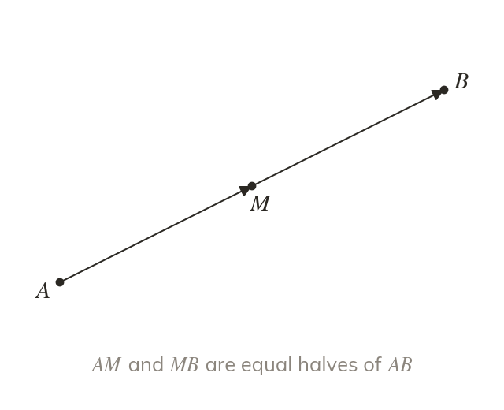
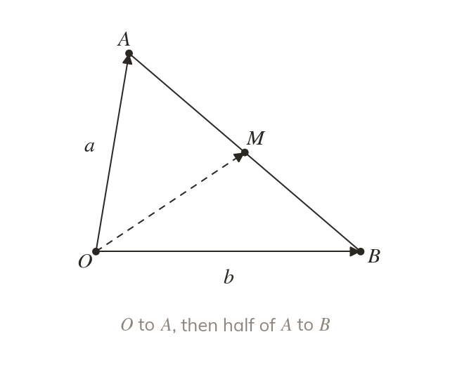
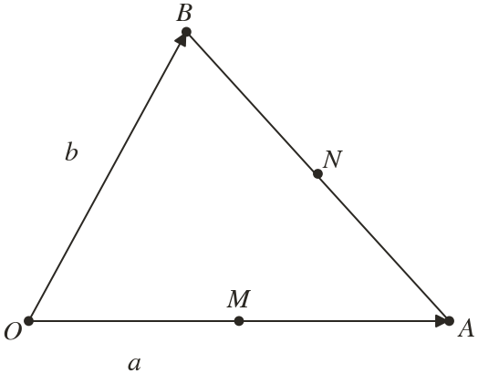
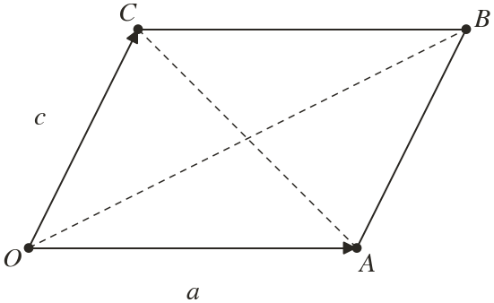
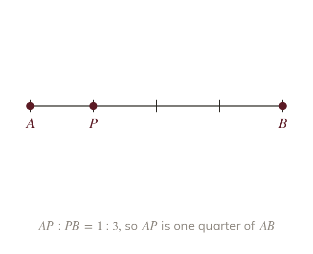
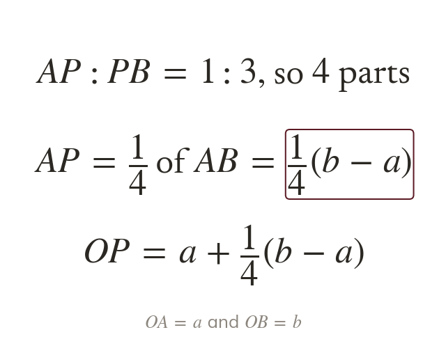
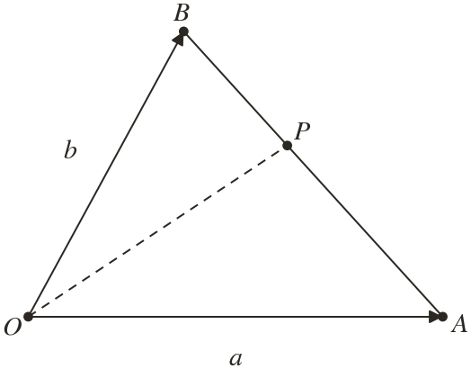

Halfway along
The midpoint M is halfway along AB, in the same direction. So AM→ is half of AB→.
A point halfway along a line, or a third of the way, is still reached by a route of known vectors. Today we find vectors to midpoints and to points that split a line in a ratio.
Work down the page at your own pace. Write every answer in your book first, then click to check it.
Read each card, then follow the worked examples one step at a time.

The midpoint M is halfway along AB, in the same direction. So AM→ is half of AB→.

To reach from , go to A first, then halfway along AB. So OM→ =
Pick an answer. If it's wrong, the feedback tells you which mistake it was.


Read each card, then follow the worked examples one step at a time.

A ratio : cuts a line into equal parts. So AP : : puts P a quarter along.

The same fraction applies to the vector. So AP→ = ¹⁄₄AB→, and OP→ =
Pick an answer. If it's wrong, the feedback tells you which mistake it was.

Finished? Next lesson: 11H.8.6 Ratios in Vector Problems.
For each skill, tap the one that is true for you today. Your Revise pages start with anything you mark Not yet.
Your ratings are saved on this device only.
Log in, then search for a code to practise that skill.
Videos, worksheets and more on each part of this lesson.